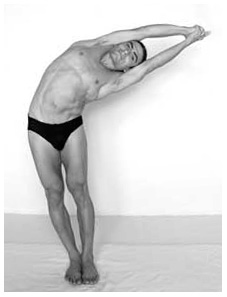
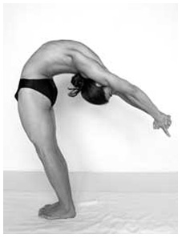
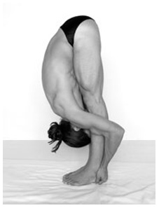
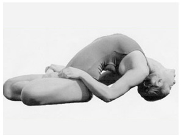
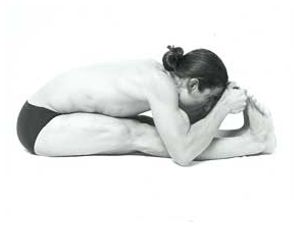
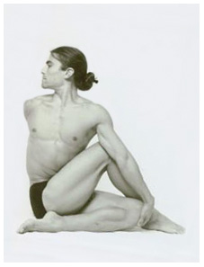

Youth Division (Ages 11 to 17) - 4 Compulsory Postures
HALF MOON POSE - 3 PARTS
PART 1 — SIDE BEND

How to perform the posture:
1. Stand with feet together, arms overhead with palms together, arms straight, elbows locked. Legs straight and knees locked. Hips forward, upper body and arms back, chin up. Weight in the heels.
2. Without bending arms or legs bend body to the right in a straight line. Push hips out to the left as far as possible. Keep both hips and shoulders facing forward to create a lateral stretch for the spine. Look straight ahead.
3. Bring body down while continuously pushing hips out. Hold deepest stretch for at least 5 counts.
4. Repeat other side.
Note: (side bending includes both right and left side and should be done facing the judges)
What the judges will look for:
1. Palms all the way together. Elbows and knees locked.
2. Maximum stretching on side of body.
3. Straight spine - hips and shoulders facing forward – no twisting.
4. Weight on the heels.
5. Continuous stretching but stillness while in posture.
PART 2 — BACK BEND

How to perform the posture:
1. Stand with feet together, arms overhead with palms together. Inhale-hold the breathing and drop head all the way back. Bring arms back to bend the entire spine.
2. Keep arms and legs straight. Push upper body back. Push hips, thighs and stomach forward. Keep reaching upper body back.
3. Hold at maximum backbend for at least 5 counts.
4. Come up with arms overhead.
Note: (back bend should be done with the side facing the judge )
What the judges will look for:
1. Head all the way back.
2. Arms all the way back – arms touching ears.
3. Entire spine bending/compressing – not just lower spine.
4. Weight on the heels.
PART 3 — FORWARD BEND

How to perform the posture:
1. With arms and head together bend forward. Place hands under heels with 5 fingers together on each hand and little fingers touching side by side.
2. Pull on heels to stretch body down. Elbows behind the legs on calf muscle, arms touching with the legs. Keep stomach on thighs, chest on knees and face on shins. Straighten legs and lock knees. Stretch upper body down to the floor to touch the head to the toes.
3. Hold at maximum backbend for at least 5 counts.
4. Come up with arms and head together.
Note: (forward bend should be done with the side facing the judges)
What the judges will look for:
1. Palms all the way together. Elbows and knees locked.
2. Maximum stretching on side of body.
3. Straight spine - hips and shoulders facing forward – no twisting.
4. Weight on the heels.
5. Continuous stretching but stillness while in posture.
FISH POSE

How to perform the posture:
1. Sit in lotus pose.
2. Lie back and bring hands by shoulders, fingers pointing towards shoulders – push chest up and come on the top of head. Bring head as close to butt as possible in order to create maximum compression.
3. Grab big the big toe of each foot with index and middle finger, palms down and elbows to the floor. Keep both knees on the floor.
4. Look up towards forehead.
What the judges will look for:
1. Spinal compression, including symmetry and depth.
2. Grip on the topes.
3. Knees on the floor, elbows on the floor.
4. Top of the head on the floor.
5. Chest lifted.
STRETCHING POSE

How to perform the posture:
1. Sit with spine upright and both legs fully extended forward, feet together.
2. Grab the big toes from the top, with the middle and index fingers together, palms facing each other.
3. Pull on the toes. Feet together and flexed. Legs straight, knees locked and heels in the air.
4. With a flat back, stretch upper body forward from the lower spine. Touch the elbows on the floor along side the calf muscles. Bring the body down, stomach over the thighs, chest over the knees touching, top of the head in line with the toes, forehead touching the toes or lower legs.
What the judges will look for:
1. Legs straight and thigh muscles contracted – no gap between back of the knees and the floor.
2. Feet together.
3. Feet flexed.
4. Spine straight.
5. Stomach and chest on legs.
6. Elbows on the floor.
7. Head in line with the toes and face down.
8. Continuous stretching.
SPINE TWISTING POSE

How to perform the posture:
1. Sit on the floor with both legs in front of you. Bend left knee, knee on the floor and left heel touching side of right buttock, left toes pointed behind you. Bring right leg over the left, put right foot on the floor to the left of your knee – right heel touching left knee.
2. Bring left arm to the right and over right knee. Press the elbow against the right knee and slip hand in between the left knee and the right ankle; grasp the kneecap with your palm. Put right arm behind your back and reach all the way around until you can touch/grab the left thigh.
3. Turn your head to the right and twist your face, shoulders and whole torso to the right as much as possible.
4. Both buttocks on the floor, left knee flat on the floor and spine straight.
5. Exhale and hold.
What the judges will look for:
1. Position the legs so that the bent knee heel is touching the opposite hip – but not sitting on heel.
2. Toes pointed behind.
3. Where the hand is holding the bottom knee – the knee, hand and heel – all 3 are together – wrist straight.
4. Spine straight.
5. Fingertips grabbing the thigh.
6. Chin over shoulder.
7. Downside knee and both hips touching the floor.
Championship Home
|